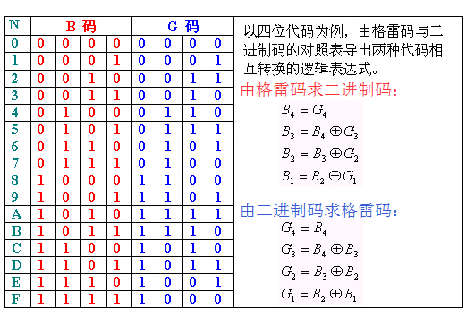
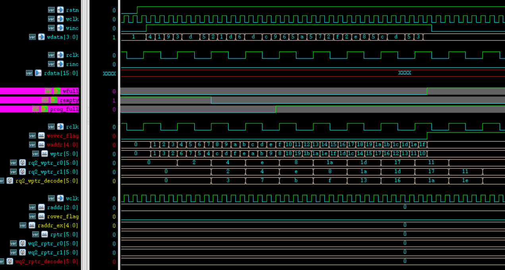

FIFO (First In First Out) es una memoria utilizada con frecuencia en la transmisión de datos asíncrona. Esta memoria se caracteriza porque los datos entran primero y salen primero (los últimos en entrar salen últimos). En realidad, los problemas de transmisión asíncrona de datos de múltiples bits de ancho, ya sea del dominio de reloj rápido al lento, o del dominio de reloj lento al rápido, pueden manejarse con FIFO.
Principio de FIFO
Flujo de trabajo
Después del reset, bajo el control del reloj de escritura y las señales de estado, los datos se escriben en el FIFO. La dirección de escritura de la RAM comienza en 0; cada vez que se escribe un dato, el puntero de dirección de escritura se incrementa en uno y apunta a la siguiente celda de memoria. Cuando el FIFO está lleno, no se pueden escribir más datos; de lo contrario, los datos se perderán por sobrescritura.
Cuando los datos del FIFO están en estado no vacío o lleno, bajo el control del reloj de lectura y las señales de estado, los datos pueden leerse del FIFO. La dirección de lectura de la RAM comienza en 0; cada vez que se lee un dato, el puntero de dirección de lectura se incrementa en uno y apunta a la siguiente celda de memoria. Cuando el FIFO se vacía, no se pueden leer más datos; de lo contrario, los datos leídos serán incorrectos.
La estructura de almacenamiento del FIFO es una RAM de doble puerto, por lo que se permite la lectura y escritura simultáneas. La estructura típica de un FIFO asíncrono se muestra en la siguiente figura. Los puertos y las señales internas se explicarán durante la escritura del código.

Momentos de lectura y escritura
En cuanto al momento de escritura, mientras los datos en el FIFO no estén en estado lleno, se puede realizar la operación de escritura; si el FIFO está lleno, se prohíbe escribir más datos.
En cuanto al momento de lectura, mientras los datos en el FIFO no estén en estado vacío, se puede realizar la operación de lectura; si el FIFO está vacío, se prohíbe leer más datos.
De todos modos, durante un período de lectura y escritura normal del FIFO, si la lectura y la escritura se realizan simultáneamente, la velocidad de escritura del FIFO no debe ser mayor que la velocidad de lectura.
Estado de vacío de lectura
Al iniciar el reset, el FIFO no tiene datos y la señal de estado vacío está activa. Después de que se escriben datos en el FIFO, la señal de estado vacío se pone a nivel bajo (inactiva). Cuando la dirección de lectura alcanza a la dirección de escritura, es decir, cuando las direcciones de lectura y escritura son iguales, el FIFO está en estado vacío.
Debido a que es un FIFO asíncrono, al comparar las direcciones de lectura y escritura se necesita lógica de sincronización por registros, lo que consume cierto tiempo. Por lo tanto, la señal indicadora de estado vacío no es en tiempo real y tiene cierto retraso. Si durante este retardo se escriben nuevos datos en el FIFO, puede ocurrir que la señal de estado vacío esté activa pero en realidad haya datos en el FIFO.
Estrictamente hablando, esta indicación de vacío es incorrecta. Pero el propósito de generar el estado vacío es evitar que una operación de lectura lea datos de un FIFO vacío. Cuando se genera la señal de estado vacío, el FIFO realmente tiene datos; equivale a anticipar la señal de estado vacío, por lo que es seguro no realizar operaciones de lectura del FIFO en ese momento. Por lo tanto, este diseño no presenta problemas desde el punto de vista de la aplicación.
Estado de lleno de escritura
Al iniciar el reset, el FIFO no tiene datos y la señal de lleno está inactiva. Después de que se escriben datos en el FIFO, si la operación de lectura no se realiza o la velocidad de lectura es relativamente lenta, en cuanto la dirección de escritura supera a la dirección de lectura en una profundidad de FIFO, se genera la señal de estado lleno. En este momento, las direcciones de escritura y lectura también son iguales, pero su significado es diferente.

En este caso, se suele usar un bit adicional como bit de extensión de las direcciones de lectura y escritura, respectivamente, para distinguir si el FIFO está vacío o lleno cuando las direcciones de lectura y escritura son iguales. Cuando las direcciones de lectura/escritura y los bits de extensión son todos iguales, indica que la cantidad de datos escritos y leídos es la misma, por lo que el FIFO está en estado vacío. Si las direcciones de lectura y escritura son iguales pero los bits de extensión son opuestos, indica que la cantidad de datos escritos ha superado en una profundidad de FIFO a la cantidad de datos leídos, por lo que el FIFO está en estado lleno. Por supuesto, la premisa para que esta condición se cumpla es que el estado vacío prohíba la lectura y el estado lleno prohíba la escritura.
Del mismo modo, debido a la lógica de retardo asíncrono, la señal de estado lleno tampoco es en tiempo real. Sin embargo, también equivale a anticipar la señal de estado lleno; no realizar operaciones de escritura en el FIFO en ese momento no afecta la corrección de la aplicación.
Diseño de FIFO
Requisitos de diseño
Para diseñar un FIFO aplicable a diversos escenarios, aquí se plantean los siguientes requisitos de diseño:
- (1) La profundidad y el ancho del FIFO deben ser parametrizables, generar señales de estado vacío y lleno, y generar una señal de estado lleno configurable. Cuando los datos internos del FIFO alcancen la cantidad de parámetros establecida, se pone esta señal a nivel alto.
- (2) El ancho de bits de los datos de entrada y de salida puede ser diferente, pero se debe garantizar la consistencia entre el ancho de bits de los datos de escritura y la dirección de escritura con el ancho de bits de los datos de lectura y la dirección de lectura. Por ejemplo, si el ancho de bits de los datos de escritura es de 8 bits, el ancho de bits de la dirección de escritura es de 6 bits (64 datos). Si el ancho de bits de los datos de salida se requiere de 32 bits, el ancho de bits de la dirección de salida debe ser de 4 bits (16 datos).
- (3) El FIFO es asíncrono, es decir, las señales de control de lectura y escritura provienen de diferentes dominios de reloj. Antes de generar las señales de estado vacío y lleno, las señales de dirección de lectura y escritura deben sincronizarse mediante código Gray, reduciendo las transiciones de las señales de múltiples bits para disminuir los errores de transmisión de datos durante la sincronización por registros. La conversión entre el código Gray y el binario se muestra en la siguiente figura.

Diseño de RAM de doble puerto
Los parámetros de los puertos de la RAM son configurables, y los anchos de bits de lectura y escritura pueden ser diferentes. Se recomienda que, al definir la matriz de memoria, se tomen como referencia los parámetros de dirección de mayor ancho de bits y de datos de menor ancho de bits, para facilitar el acceso por selección de las variables de la matriz.
La descripción en Verilog es la siguiente.
Ejemplo
#( parameter AWI = 5 ,
parameter AWO = 7 ,
parameter DWI = 64 ,
parameter DWO = 16
)
(
input CLK_WR , //reloj de escritura
input WR_EN , //habilitación de escritura
input [AWI-1:0] ADDR_WR ,//dirección de escritura
input [DWI-1:0] D , //datos de escritura
input CLK_RD , //reloj de lectura
input RD_EN , //habilitación de lectura
input [AWO-1:0] ADDR_RD ,//dirección de lectura
output reg [DWO-1:0] Q //datos de lectura
);
//El ancho de bits de salida es mayor que el de entrada; calcular el factor de ampliación y los bits correspondientes
parameter EXTENT = DWO/DWI ;
parameter EXTENT_BIT = AWI-AWO > 0 ? AWI-AWO : 'b1 ;
//El ancho de bits de entrada es mayor que el de salida; calcular el factor de reducción y los bits correspondientes
parameter SHRINK = DWI/DWO ;
parameter SHRINK_BIT = AWO-AWI > 0 ? AWO-AWI : 'b1;
genvar i ;
generate
//Ampliación del ancho de bits de datos (reducción del ancho de bits de dirección)
if (DWO >= DWI) begin
//Lógica de escritura, escribir una vez por ciclo de reloj
reg [DWI-1:0] mem [(1<<AWI)-1 : 0] ;
always @(posedge CLK_WR) begin
if (WR_EN) begin
mem[ADDR_WR] <= D ;
end
end
//Lógica de lectura, leer 4 veces por ciclo de reloj
for (i=0; i<EXTENT; i=i+1) begin
always @(posedge CLK_RD) begin
if (RD_EN) begin
Q[(i+1)*DWI-1: i*DWI] <= mem[(ADDR_RD*EXTENT) + i ] ;
end
end
end
end
//=================================================
//Reducción del ancho de bits de datos (ampliación del ancho de bits de dirección)
else begin
//Lógica de escritura, escribir 4 veces por ciclo de reloj
reg [DWO-1:0] mem [(1<<AWO)-1 : 0] ;
for (i=0; i<SHRINK; i=i+1) begin
always @(posedge CLK_WR) begin
if (WR_EN) begin
mem[(ADDR_WR*SHRINK)+i] <= D[(i+1)*DWO -1: i*DWO] ;
end
end
end
//Lógica de lectura, leer 1 vez por ciclo de reloj
always @(posedge CLK_RD) begin
if (RD_EN) begin
Q <= mem[ADDR_RD] ;
end
end
end
endgenerate
endmodule
Diseño del contador
El contador se utiliza para generar la información de direcciones de lectura y escritura. Su ancho de bits es configurable y no es necesario establecer un valor final; basta con dejar que se desborde y vuelva a contar automáticamente. La descripción en Verilog es la siguiente.
Ejemplo
#(parameter W )
(
input rstn ,
input clk ,
input en ,
output [W-1:0] count
);
reg [W-1:0] count_r ;
always @(posedge clk or negedge rstn) begin
if (!rstn) begin
count_r <= 'b0 ;
end
else if (en) begin
count_r <= count_r + 1'b1 ;
end
end
assign count = count_r ;
endmodule
Diseño de FIFO
Este módulo es la parte principal del FIFO; genera la lógica de control de lectura y escritura, y produce señales de estado vacío, lleno y lleno programable.
Debido a limitaciones de espacio, aquí solo se proporciona el código de lógica para el caso en que el ancho de bits de los datos de lectura es mayor que el de los datos de escritura. La descripción del código para el caso en que el ancho de bits de los datos de escritura es mayor que el de los datos de lectura se detalla en el anexo.
Ejemplo
#( parameter AWI = 5 ,
parameter AWO = 3 ,
parameter DWI = 4 ,
parameter DWO = 16 ,
parameter PROG_DEPTH = 16) //Profundidad configurable
(
input rstn, //Lectura y escritura utilizan un solo reset
input wclk, //reloj de escritura
input winc, //habilitación de escritura
input [DWI-1: 0] wdata, //datos de escritura
input rclk, //reloj de lectura
input rinc, //habilitación de lectura
output [DWO-1 : 0] rdata, //datos de lectura
output wfull, //Bandera de lleno de escritura
output rempty, //Bandera de vacío de lectura
output prog_full //Bandera de lleno programable
);
//El ancho de bits de salida es mayor que el de entrada; calcular el factor de ampliación y los bits correspondientes
parameter EXTENT = DWO/DWI ;
parameter EXTENT_BIT = AWI-AWO ;
//El ancho de bits de salida es menor que el de entrada; calcular el factor de reducción y los bits correspondientes
parameter SHRINK = DWI/DWO ;
parameter SHRINK_BIT = AWO-AWI ;
//==================== push/wr counter ===============
wire [AWI-1:0] waddr ;
wire wover_flag ; //Usar un bit adicional como extensión de la dirección de escritura
ccnt #(.W(AWI+1))
u_push_cnt(
.rstn (rstn),
.clk (wclk),
.en (winc && !wfull), //full: prohibir escritura
.count ({wover_flag, waddr})
);
//============== pop/rd counter ===================
wire [AWO-1:0] raddr ;
wire rover_flag ; //Usar un bit adicional como extensión de la dirección de lectura
ccnt #(.W(AWO+1))
u_pop_cnt(
.rstn (rstn),
.clk (rclk),
.en (rinc & !rempty), //empyt: prohibir lectura
.count ({rover_flag, raddr})
);
//==============================================
//Entrada de datos estrechos, salida de datos anchos
generate
if (DWO >= DWI) begin : EXTENT_WIDTH
//Conversión a código Gray
wire [AWI:0] wptr = ({wover_flag, waddr}>>1) ^ ({wover_flag, waddr}) ;
//Sincronizar el puntero de escritura con el dominio de reloj de lectura
reg [AWI:0] rq2_wptr_r0 ;
reg [AWI:0] rq2_wptr_r1 ;
always @(posedge rclk or negedge rstn) begin
if (!rstn) begin
rq2_wptr_r0 <= 'b0 ;
rq2_wptr_r1 <= 'b0 ;
end
else begin
rq2_wptr_r0 <= wptr ;
rq2_wptr_r1 <= rq2_wptr_r0 ;
end
end
//Conversión a código Gray
wire [AWI-1:0] raddr_ex = raddr << EXTENT_BIT ;
wire [AWI:0] rptr = ({rover_flag, raddr_ex}>>1) ^ ({rover_flag, raddr_ex}) ;
//Sincronizar el puntero de lectura con el dominio de reloj de escritura
reg [AWI:0] wq2_rptr_r0 ;
reg [AWI:0] wq2_rptr_r1 ;
always @(posedge wclk or negedge rstn) begin
if (!rstn) begin
wq2_rptr_r0 <= 'b0 ;
wq2_rptr_r1 <= 'b0 ;
end
else begin
wq2_rptr_r0 <= rptr ;
wq2_rptr_r1 <= wq2_rptr_r0 ;
end
end
//Decodificación inversa del código Gray
//Si solo se necesitan las señales de estado vacío y lleno, no se requiere decodificación inversa
//Debido a la existencia de la señal de lleno programable, es conveniente comparar las direcciones después de la decodificación inversa
reg [AWI:0] wq2_rptr_decode ;
reg [AWI:0] rq2_wptr_decode ;
integer i ;
always @(*) begin
wq2_rptr_decode[AWI] = wq2_rptr_r1[AWI];
for (i=AWI-1; i>=0; i=i-1) begin
wq2_rptr_decode[i] = wq2_rptr_decode[i+1] ^ wq2_rptr_r1[i] ;
end
end
always @(*) begin
rq2_wptr_decode[AWI] = rq2_wptr_r1[AWI];
for (i=AWI-1; i>=0; i=i-1) begin
rq2_wptr_decode[i] = rq2_wptr_decode[i+1] ^ rq2_wptr_r1[i] ;
end
end
//Si las direcciones de lectura/escritura y los bits de extensión son exactamente iguales, es estado vacío
assign rempty = (rover_flag == rq2_wptr_decode[AWI]) &&
(raddr_ex >= rq2_wptr_decode[AWI-1:0]);
//Si las direcciones de lectura/escritura son iguales pero los bits de extensión difieren, es estado lleno
assign wfull = (wover_flag != wq2_rptr_decode[AWI]) &&
(waddr >= wq2_rptr_decode[AWI-1:0]) ;
//Si los bits de extensión son iguales, la dirección de escritura no es menor que la dirección de lectura
//Si los bits de extensión difieren, la parte de dirección de escritura es menor que la dirección de lectura; la dirección de escritura real debe aumentar una profundidad de FIFO
assign prog_full = (wover_flag == wq2_rptr_decode[AWI]) ?
waddr - wq2_rptr_decode[AWI-1:0] >= PROG_DEPTH-1 :
waddr + (1<<AWI) - wq2_rptr_decode[AWI-1:0] >= PROG_DEPTH-1;
//Instanciación de RAM de doble puerto
ramdp
#( .AWI (AWI),
.AWO (AWO),
.DWI (DWI),
.DWO (DWO))
u_ramdp
(
.CLK_WR (wclk),
.WR_EN (winc & ！wfull), //Prohibir escritura cuando está lleno
.ADDR_WR (waddr),
.D (wdata[DWI-1:0]),
.CLK_RD (rclk),
.RD_EN (rinc & !rempty), //Prohibir lectura cuando está vacío
.ADDR_RD (raddr),
.Q (rdata[DWO-1:0])
);
end
//==============================================
//big in and small out
/*
else begin: SHRINK_WIDTH
……
end
*/
endgenerate
endmodule
Instanciación de FIFO
A continuación se puede instanciar el FIFO diseñado para realizar el procesamiento asíncrono de transmisión de datos de múltiples bits.
El ancho de bits de los datos de escritura es de 4 bits y la profundidad de escritura es de 32.
El ancho de bits de los datos de lectura es de 16 bits, la profundidad de lectura es de 8 y la profundidad full configurable es de 16.
Ejemplo
input rstn,
input [4-1: 0] din, //Escritura de datos asíncrona
input din_clk, //Reloj de escritura asíncrono
input din_en, // Habilitación de escritura asíncrona
output [16-1 : 0] dout, // Datos después de la sincronización
input dout_clk, // Reloj usado para sincronización
input dout_en ); // Habilitación de datos sincronizados
wire fifo_empty, fifo_full, prog_full ;
wire rd_en_wir ;
wire [15:0] dout_wir ;
// Prohibir lectura en estado vacío, de lo contrario leer siempre
assign rd_en_wir = fifo_empty ? 1'b0 : 1'b1 ;
fifo #(.AWI(5), .AWO(3), .DWI(4), .DWO(16), .PROG_DEPTH(16))
u_buf_s2b(
.rstn (rstn),
.wclk (din_clk),
.winc (din_en),
.wdata (din),
.rclk (dout_clk),
.rinc (rd_en_wir),
.rdata (dout_wir),
.wfull (fifo_full),
.rempty (fifo_empty),
.prog_full (prog_full));
// Almacenar en caché los datos sincronizados y la habilitación
reg dout_en_r ;
always @(posedge dout_clk or negedge rstn) begin
if (!rstn) begin
dout_en_r <= 1'b0 ;
end
else begin
dout_en_r <= rd_en_wir ;
end
end
assign dout = dout_wir ;
assign dout_en = dout_en_r ;
endmodule
testbench
Ejemplo
`define SMALL2BIG
module test ;
`ifdef SMALL2BIG
reg rstn ;
reg clk_slow, clk_fast ;
reg [3:0] din ;
reg din_en ;
wire [15:0] dout ;
wire dout_en ;
//reset
initial begin
clk_slow = 0 ;
clk_fast = 0 ;
rstn = 0 ;
#50 rstn = 1 ;
end
// El reloj de lectura clock_slow es más rápido que 1/4 del reloj de escritura clk_fast
// Asegurar que la lectura de datos sea ligeramente más rápida que la escritura
parameter CYCLE_WR = 40 ;
always #(CYCLE_WR/2/4) clk_fast = ~clk_fast ;
always #(CYCLE_WR/2-1) clk_slow = ~clk_slow ;
//data generate
initial begin
din = 16'h4321 ;
din_en = 0 ;
wait (rstn) ;
// (1) Probar las señales full, prog_full, empyt
force test.u_data_buf2.u_buf_s2b.rinc = 1'b0 ;
repeat(32) begin
@(negedge clk_fast) ;
din_en = 1'b1 ;
din = {$random()} % 16;
end
@(negedge clk_fast) din_en = 1'b0 ;
// (2) Probar lectura y escritura de datos
#500 ;
rstn = 0 ;
#10 rstn = 1 ;
release test.u_data_buf2.u_buf_s2b.rinc;
repeat(100) begin
@(negedge clk_fast) ;
din_en = 1'b1 ;
din = {$random()} % 16;
end
// (3) Detener la lectura y probar nuevamente las señales empyt, full, prog_full
force test.u_data_buf2.u_buf_s2b.rinc = 1'b0 ;
repeat(18) begin
@(negedge clk_fast) ;
din_en = 1'b1 ;
din = {$random()} % 16;
end
end
fifo_s2b u_data_buf2(
.rstn (rstn),
.din (din),
.din_clk (clk_fast),
.din_en (din_en),
.dout (dout),
.dout_clk (clk_slow),
.dout_en (dout_en));
`else
`endif
//stop sim
initial begin
forever begin
#100;
if ($time >= 5000) $finish ;
end
end
endmodule
Análisis de simulación
Según los 3 pasos de estímulos de prueba en el testbench, el análisis es el siguiente:
Prueba (1): Los resultados de temporización de los puertos del FIFO y algunas señales internas son los siguientes.
Como se muestra en la figura, cuando el FIFO comienza a escribir datos internamente, hay un retraso antes de que la señal de estado vacío se ponga en bajo, debido a la sincronización de la información de direcciones de lectura y escritura.
Dado que no se realiza una operación de lectura del FIFO en este momento, en comparación con la operación de escritura, las señales full y prog_full se ponen en alto casi sin retraso.

Prueba (2): Cuando el FIFO realiza lectura y escritura simultáneamente, las señales de puerto del módulo de procesamiento asíncrono de nivel superior digital son las siguientes. Las dos figuras muestran respectivamente el proceso de lectura al inicio y al final de la transferencia de datos.
Como se muestra en la figura, los datos se transmiten correctamente tanto al inicio como al final, completando el procesamiento asíncrono de datos de múltiples bits entre diferentes dominios de reloj.


Prueba (3): El diagrama de simulación temporal de todo el comportamiento de lectura/escritura del FIFO y de la detención de la lectura se muestra a continuación.
Como se muestra en la figura, cuando la lectura y la escritura se realizan simultáneamente, la señal de estado vacío de lectura rempty se pone en bajo, lo que indica que hay datos escritos en el FIFO. Por un lado, la velocidad de lectura es ligeramente mayor que la de escritura y hay retrasos en la transferencia entre datos, por lo que rempty puede ponerse en alto durante el proceso intermedio.
Durante el proceso de lectura y escritura, las señales full y prog_full permanecen en bajo, lo que indica que los datos en el FIFO no alcanzan cierta cantidad. Cuando se detiene la operación de lectura, las dos señales full se ponen en alto poco después, indicando que el FIFO está lleno. Comparando cuidadosamente la información de direcciones de lectura y escritura, el comportamiento del FIFO es correcto.

El diseño completo del FIFO se encuentra en el adjunto, incluidos el diseño asíncrono y la simulación cuando el ancho de bits de los datos de entrada es menor que el ancho de bits de los datos de salida.
Haz clic para compartir notas
<p style="font-size:14px;">¡Las notas deben ser una extensión del contenido de este artículo!</p><br> <p style="font-size:12px;"><a href="../tougao.html" target="_blank">Envío de artículos, haga clic aquí</a></p> <p style="font-size:14px;"><a href="./runoob-user-test-intro.html" target="_blank">Cómo obtener el código de invitación de registro</a></p> <h3 class="text-muted"><i class="fa fa-info-circle" aria-hidden="true"></i> Debe <a href=".." class="runoob-pop">iniciar sesión</a> antes de compartir notas.</h3> <p><a href="./runoob-user-test-intro.html" target="_blank">Cómo obtener el código de invitación de registro</a></p>